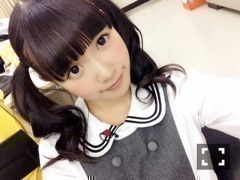
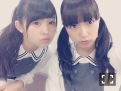
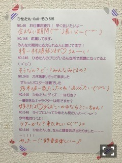

| 2015/07 03 Fri | ひめたん-0o0-その552 |
こんばんは！
舞台が終わって、ゆっくり
みなさんのコメント読みました(´｡•ω•｡`)
新しいひめたんの顔が見れてよかった～とか
ひめのお芝居好きだよ～とか
もっと見たかったな～とか
もうここには書ききれないくらい
みなさんいろんなことを感じ取って
教えてくれてた！全部受け取りました！
よく声が通るねとか聞き取りやすいとか
声を褒めてもらえるの本当に嬉しい♡
私がこの活動をしていて
一番大切にしていることなので
もっともっと極めよう、頑張ろうって
モチベーションになりました！
甘噛みした日にはひとりで
すごくすごーく落ち込んだり
初日の落語が途中で止まることなく
上手くいったあとはルンルンだったり。
そこだけはこだわりを持って
これからさらに磨きたいです♡

らじらー！サンデー次回のゲストは
声優アーツに早見沙織さん
乃木坂46から衛藤美彩ちゃんです！
おたよりもたくさん募集中～
詳しくはらじらー！の公式サイトを
覗いてみてくださーい♡
ひめはおたより募集欄に
「ひとりノリひめたん」第2弾があることに
びっくりしているんだが((((；ﾟДﾟ))))
みんなどうせこの企画のおたより
ニヤニヤしながら考えるんだ((((；ﾟДﾟ))))
さらに告知です～♪
広島ホームテレビ「鯉のはなシアター」
次回のゲストとして
まあやと私が登場しますよ⊂( ˆωˆ )⊃
カープを勉強中の私にはタイムリー！
とてもすてきなお話が聞けて
ほっこりしました～
広島にお住まいの方はぜひ
チェックしてみてくださいね！
そういえば、今セブンイレブンさんで
応援グッズ付きライブチケットを買うと
「予習DVD」というものがついてきます！
これは、今回ツアーでお邪魔する地に
ゆかりのあるメンバーが
その場所のオススメを紹介してるもの♪
ひめは広島出身ということで
広島の美味しいお店や、観光地を
いくつかお話してます(´｡•ω•｡`)
ぜひこれを観て、広島を満喫して
ライブも楽しんでいただければ！！

手寅ちゃんポニーテールだったから
最近自分のツインテール見てない気がする。
ちょっとだけプライベート話♪
ままと映画「予告犯」観た！
観たひといるー？面白かったよ！
夜映画よかったな～また行きたいな～
今やってる映画でオススメの作品
あれば教えてください♪
それから、
万理華のブログにも書いてあったけど
ごはんいったよ～
カラオケも行ったよ～
万理華は普段あまり
カラオケ行かないらしいんだけど
これを機に行こうかなと言ってた♡
それくらい楽しかった♡
久々にゆっくり話せました( ˇωˇ )

それでは遅くなりましたが
久々に質問返し☆

 ひめたんにとって夏といえば何？
ひめたんにとって夏といえば何？
小学生の頃に学校の宿題で
星の観察したのが懐かしいなあ。
夏って暑いから好きじゃないんだけど
夏の夜はなんか好きなんだよね～
広島は空が広くて星も綺麗なんだよ♪
手寅ちゃんの一番お気に入りのセリフは
なんですか？
演じていて楽しかったのは
ハロウィン、初夢のシーンかな（＾ω＾）
原作で好きなのは宝くじ♡
ひめたんの日記の
コメント欄下２ケタに46を踏んだ方へ
手書きでコメ返するコーナー
＼ ひめたん46 ／

これも久々だったね
ごめんね( ´ ･ω･ ` )おまたせ
他にもFLASHスペシャルの感想、
メールのお返事など
いろんな話題があって読んでて楽しい♪
握手会まで日にちがあるから
なかなかみなさんに会えないのが
寂しいよ～( ´•̥ω•̥` )
あ、でもらじらー！あるもんね！
NOGIBINGO!5も始まるもんね！
もっといろんなところに
ひめたんがいたらきっと楽しいよね
うん♡まだまだがんばるー！
(＊´・ω・＊)
コメント(948)
2015/07/03 23:36